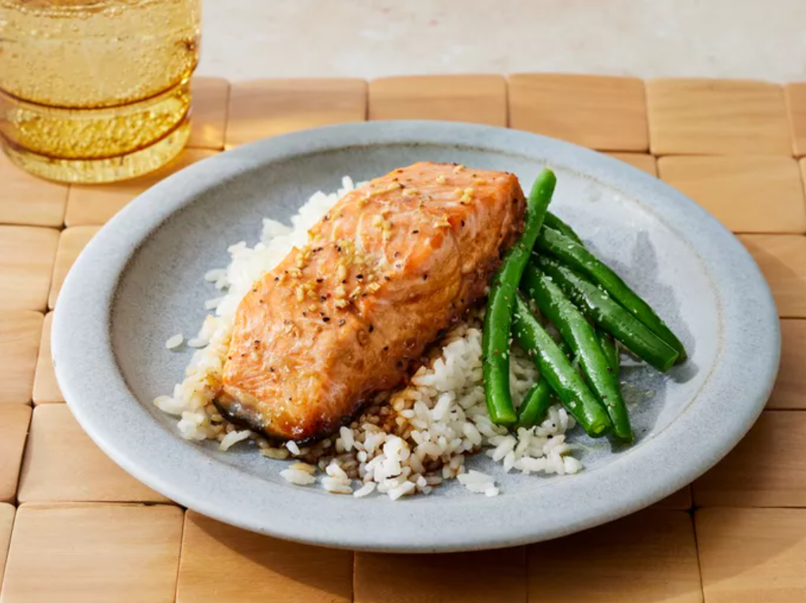

This recipe is originally from Allrecipes, including all the images.

Delicious Maple Salmon
This restaurant-worthy maple salmon recipe is as good as it gets!
Plus, it's easy to make with simple ingredients you probably already have on hand.
Ingredients
Note: The ingredients listed are for a serving size of 4.
¼ cup maple syrup
2 tablespoons soy sauce
1 clove garlic, minced
¼ teaspoon garlic salt
⅛ teaspoon ground black pepper
1 pound salmon
Steps
Gather all ingredients
Stir maple syrup, soy sauce, garlic, garlic salt, and pepper together in a small bowl.
Cut salmon into 4 equal-sized fillets; place in a shallow glass baking dish and coat with maple syrup mixture. Cover the dish and marinate salmon in the refrigerator for 30 minutes, turning once halfway.
Preheat the oven to 400 degrees F (200 degrees C).
Place the baking dish in the preheated oven and bake salmon uncovered until flesh easily flakes with a fork, about 20 minutes.